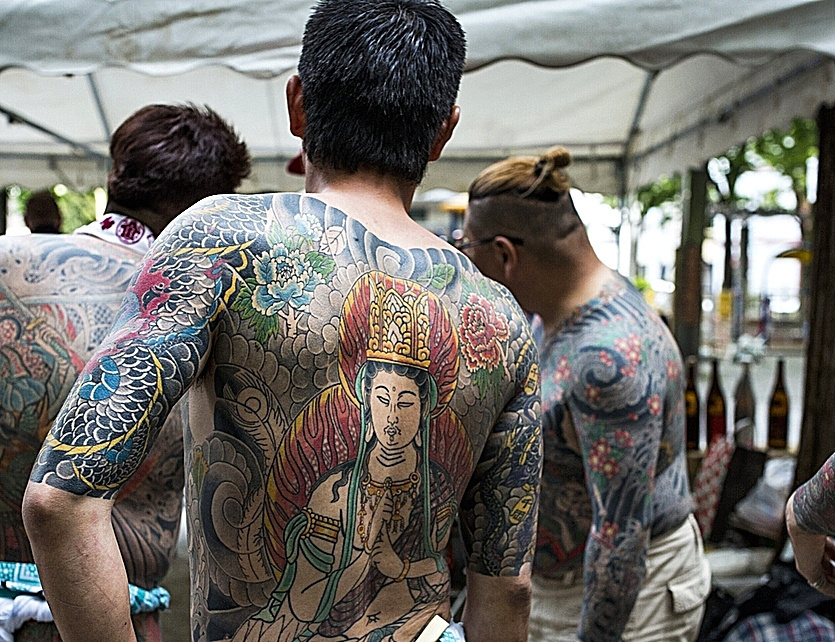

|
Durante las décadas de 1960 y 1970, la imagen del tatuaje en Japón se vio empañada una vez más.
Durante este periodo, el cine japonés se vio invadido por la proliferación de películas de la
yakuza, especialmente las de la productora Toei. En estas películas, los yakuza aparecen
sistemáticamente en la pantalla con tatuajes japoneses. Este fenómeno ha conducido en gran
medida a la connotación que conocemos hoy en día.
Además, en las décadas de 1980 y 1990 la actividad de la yakuza fue cada vez más intensa.
En respuesta, el gobierno japonés aprobó una ley contra los grupos criminales el 1 de marzo
de 1992 para desmantelarlos. El número de yakuza se redujo drásticamente, pasando de unos
180.000 miembros en su punto álgido en la década de 1960 a 28.000 miembros a finales de 2019.
Es en este momento cuando la población general empieza a prohibir a la yakuza el acceso a
sus negocios, en particular a los onsen (温泉, baños termales). Pero el temor a la ira de
la mafia hizo que los responsables de los onsen se limitaran a prohibir la entrada a las
personas tatuadas. Cabe destacar que el acceso a los sento (銭湯, baños públicos) nunca ha
estado prohibido y nunca lo estará. En el pasado, no todos los japoneses tenían un baño
en su casa, convirtiendo al sento en una necesidad pública.
Los problemas para los tatuados no se limitan a estos casos en el archipiélago japonés.
También se les prohíbe abrir cuentas bancarias y encontrar un trabajo puede ser tarea
imposible. El estigma en las mujeres llega hasta el punto que algunos tatuadores se
niegan a tatuarlas por miedo a las complicaciones que puedan surgir en sus vidas,
convirtiendo a las mujeres con tatuajes tradicionales en una rara avis. Desde entonces,
solo los japoneses apasionados por esta cultura del tatuaje y los miembros de la mafia
han seguido perpetuando la tradición del horimono. Sin embargo, a pesar de la demonización
gubernamental y la negativa opinión pública, el número de horishi en activo y su correspondiente
clientela no va en declive aún 30 años después, manteniendo la vigencia del mensaje de los héroes
del suikoden. Así que todavía existe la posibilidad de encontrar algún japonés luciendo con
orgullo sus grabados al visitar un sento.
|
 |